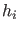
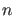
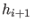
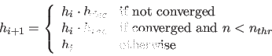

Next: Singularity handling Up: Mathematical aspects of numerical Previous: Moore-Penrose continuation Contents
Stepsize control is an important issue in these algorithms. Too small stepsizes lead to unnecessary work being done, while too big stepsizes can lead to losing details of the curve. An easily implementable and proven to be reliable method is convergence-dependent control.
Consider the computation of a next point using step size . If the computation converged,
let  denote the number of Newton iterations needed. Then the new step size 
will be selected as follows:
|  | (22) |